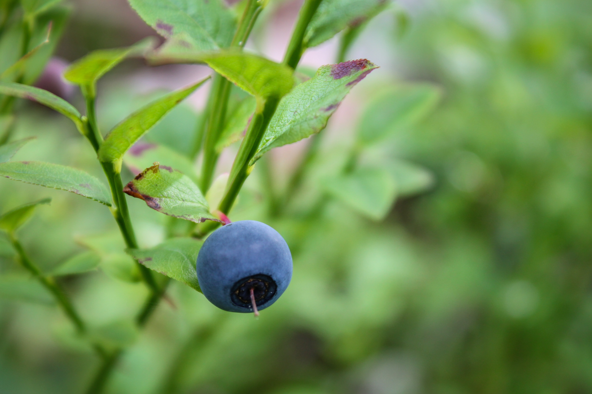

<!DOCTYPE html>
<html lang="en">
    <head>
        <meta charset="utf-8">
        <link rel="preconnect" href="https://fonts.googleapis.com">
        <link rel="preconnect" href="https://fonts.gstatic.com" crossorigin>
        <link href="https://fonts.googleapis.com/css2?family=Urbanist:wght@300;500;600;800&display=swap" rel="stylesheet">
        <meta name="viewport" content="width=device-width, initial-scale=1">
        <title>Maine Wild Blueberries</title>
        <style>
            
            html {
                font-family:"Urbanist", sans-serif;
            }

            body {
                margin:0px
            }

            a {
                color: rgb(9,1,133)
            }

            a:hover {    
                color: rgb(168, 18, 118);}

            img {
                max-width:100%
            }

            main {
            padding-left:16px;
            padding-right:16px;
            }

            header {
                background: rgb(9,1,133);
                background: linear-gradient(90deg, rgba(9,1,133,1) 0%, rgba(19,19,193,1) 39%, rgba(0,212,255,1) 100%);
                display: block;
                margin-top:0;
                height: 180px;
            }

            nav{
                padding-top:40px
            }
            nav a {
                text-decoration:none;
                color: #fff;
                font-size: 3em;
            }

            nav a:hover {
                color: rgb(230, 205, 65);
            }

            .width-700 {
                margin:auto;
                width:700px;
                max-width: 100%
            }

            .no-list-style {
                list-style: none;;
            }

            footer {
                background-color: rgb(31, 31, 31);
                color: #fff;
                margin-top: 2em;
                padding-top: 20px;
                padding-bottom: 20px;
                text-align: center;
            }
           
        </style>
    </head>
</html>
<body>
    <header>
        <nav>
            <ul class="no-list-style">
            <li><a href="index.html">Home</a></li>
            </ul>
        </nav>
    </header>
    <main>
        <section class="width-700">
            <h1>Everything About Maine Wild Blueberries</h1>
            
            <p class="intro_text">What's so great about Maine Wild Blueberries? Here's everything you need to know!</p>
            <ul>
                <li>Wild blueberries are <em>more flavorful</em> than cultivated ones.</li>
                <li>Maine wild blueberries are the second most pollinated crop in America after California almonds.</li>
                <li>Maine wild blueberries contain <em>two times</em> more antioxidants than cultivated berries.</li>
                <li>Maine blueberry icecream is delicious. <a href="https://www.giffordsicecream.com/flavors/maine-wild-blueberry-ice-cream/">Try it!</a></li>
            </ul>
        </section>
    </main>
    <footer class>
        &copy; Mariele Ventrice, 2021
    </footer>
</body>